Advanced SQL Queries for Marketing Analytics and A/B Testing
This is a course project of the Advanced SQL For Analytics & Business Intelligence Course on Udemy.
This project was about analyzing the eCommerce data of Maven Fuzzy Factory, an online retailer which has just launched its first product. I analyzed and optimized the marketing channels, measured and tested website conversion performance, and used data to understand the impact of new product launches.
Specifically, in this project, I use SQL to:
•Access and explore the Maven Fuzzy Factory database
•Become the data expert for the company, and the go-to person for mission critical analyses
•Analyze and optimize the business’ marketing channels, website, and product portfolio
Introduction
Eight months after launching the first product, the CEO of Maven Fuzzy Factory asked eight questions to understand the website's performance better. Here I will show you how I answered all the questions by writing SQL queries.
The structure of Maven Fuzzy Factory Database is illustrated in this entity relationship diagram.
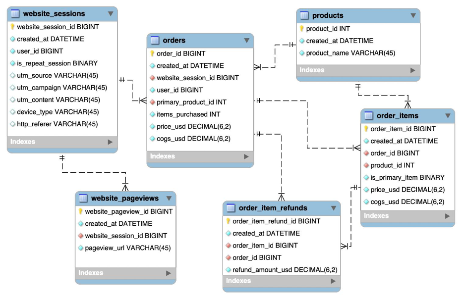1 I’d like to tell the story of our website performance improvements over the course of the first 8 months. Could you pull session to order conversion rates, by month?
SQL Code:
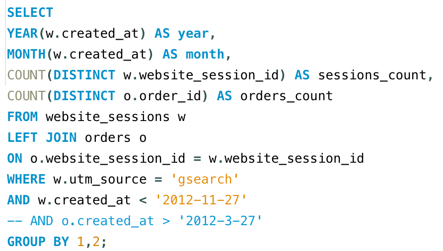Results:
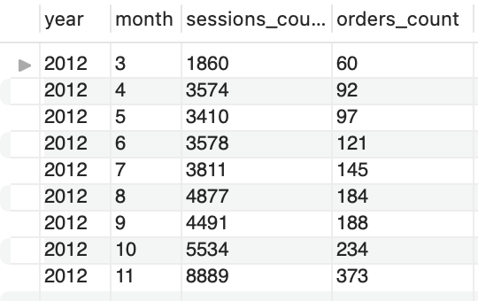Interpretation:
The results show that the website sessions and orders both increased over time during the eight months. This result indicates that the website performance was improving as the sessions and orders were growing substantially. The last month's orders were over six times the orders in the first month.
2 Next, it would be great to see a similar monthly trend for Gsearch, but this time splitting out nonbrand and brand campaigns separately. I am wondering if brand is picking up at all. If so, this is a good story to tell.
SQL Code:
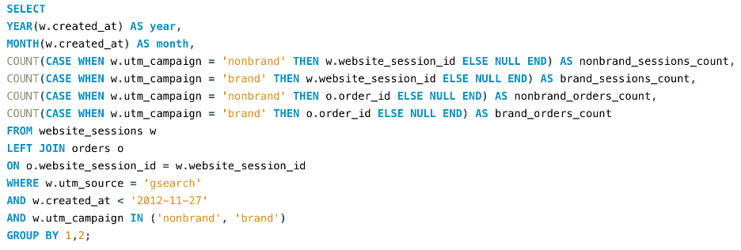Results:
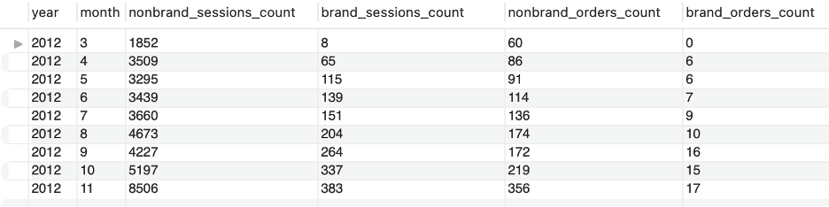Interpretation:
The brand and nonbrand sessions/orders all increased over time. The brand order/sessions were those sessions done through explicitly searching for the brand name. The lift of brand sessions/orders indicates an increase in brand awareness.
3 While we’re on Gsearch, could you dive into nonbrand, and pull monthly sessions and orders split by device type?I want to flex our analytical muscles a little and show the board we really know our traffic sources.
SQL Code:
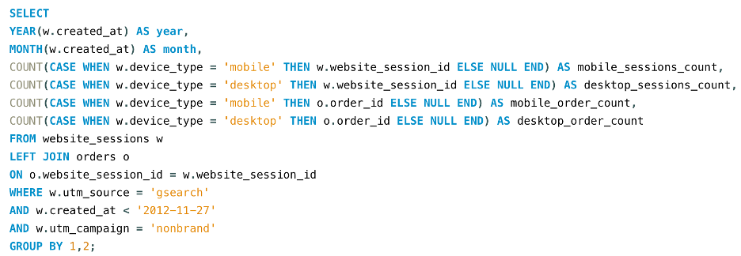Results:
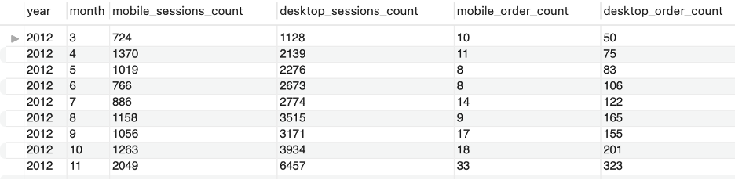Interpretation:
We see a trend that the mobile session proportion decreased over time. In the first month, it was around 2/3 mobile sessions in all the sessions, while in the last month, the ratio turned to 1/3. Similarly, in the first month, it was around 1/5 mobile orders in all the orders, while in the last month, the ratio turned to 1/10. The marketing team can allocate more resources to the desktop channel than the mobile channel.
4 I’m worried that one of our more pessimistic board members may be concerned about the large % of traffic from Gsearch. Can you pull monthly trends for Gsearch, alongside monthly trends for each of our other channels?
SQL Code & Results:
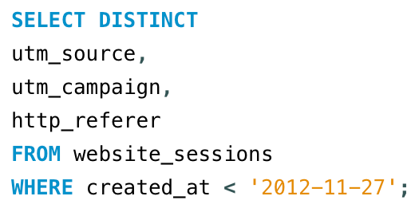 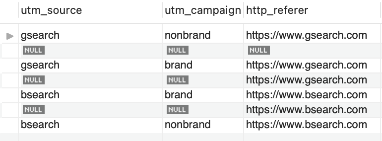 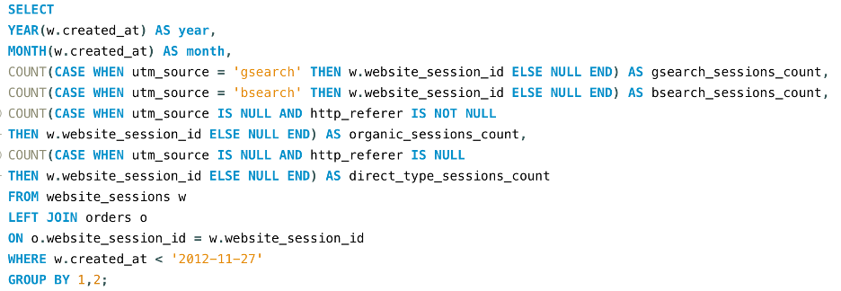 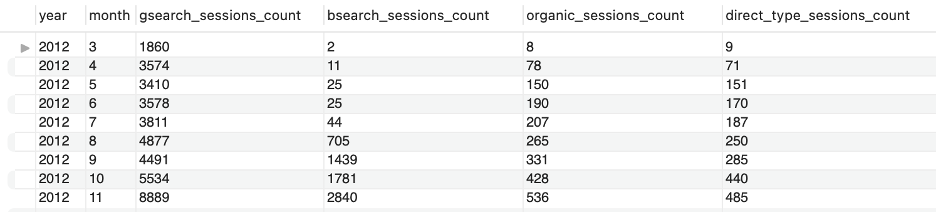Interpretation:
The gsearch and bsearch are basically different search engines. The brand campaign means the session comes from brand name searching. If both the source and campaign are null, but the referrer is not null, this session comes from an organic search. If the source, campaign, and referrer are all null, the session comes from typing the website address.
The traffic of paid channels, gsearch and bsearch are all increased during the period. The traffic of gsearch is approximately 3 times that of the bsearch. We are happy to see that the unpaid channels, organic and direct typing, were also increased, indicating an increase in our brand awareness.
5 I’d like to tell the story of our website performance improvements over the course of the first 8 months. Could you pull session to order conversion rates, by month?
SQL Code:
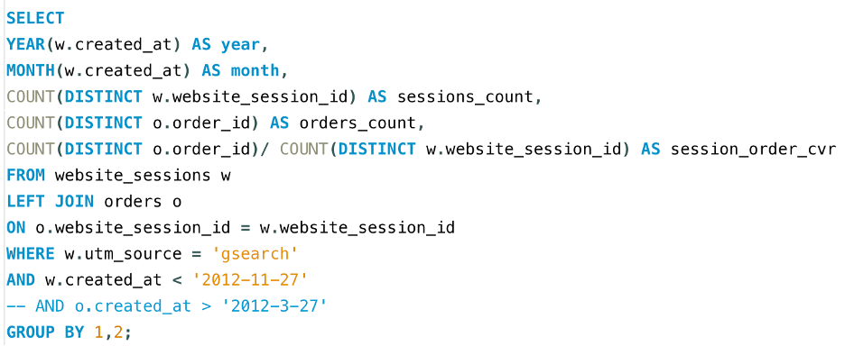Results:
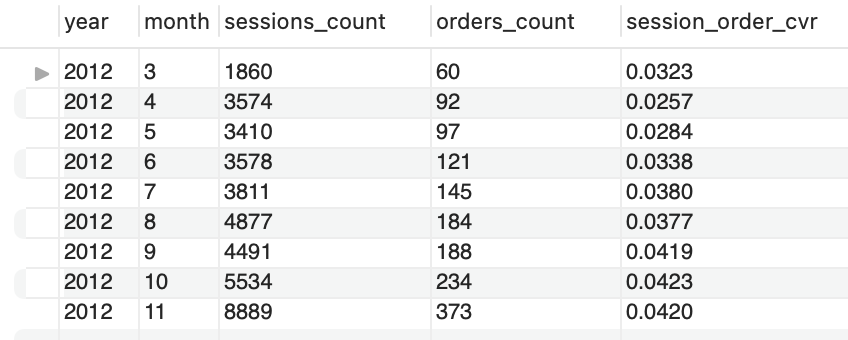Interpretation:
Sessions and orders are the same to Q1. The session to order rate was increasing during the time period except for a slight drop in the second month.
6 For the gsearch lander test, please find out the conversion rate change.
SQL Code & Results:
This is an A/B test of two landing pages (/home and /lander-1).
First, we try to find the first website pageview in the A/B test.
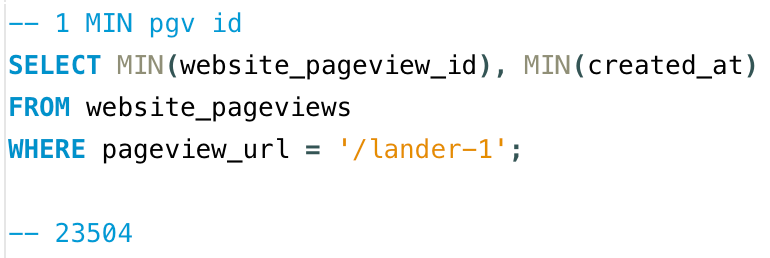The first page view ID was 23504.
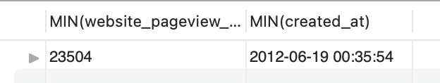Then we try to find the landing page (first pageview) of every session during the test.
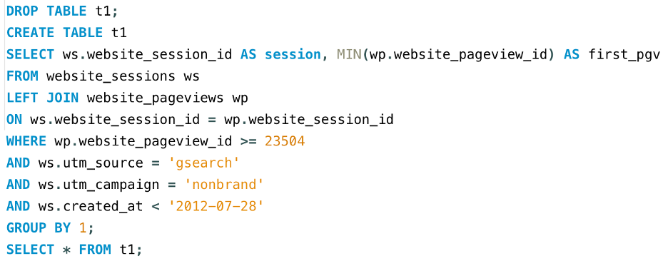 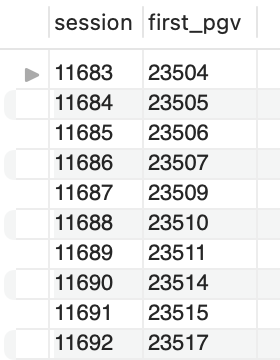Now that we have all the landing pageview IDs, we need to narrow it down to only including /home and /lander-1.
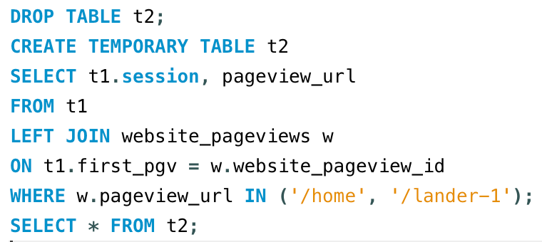 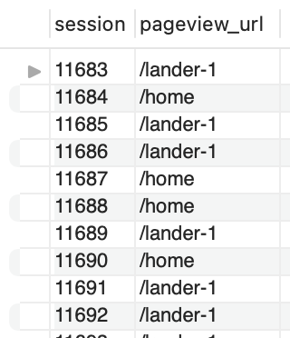In the next step, we find out if the session in the test eventually was converted to order.
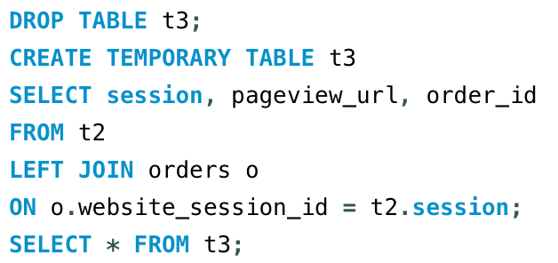 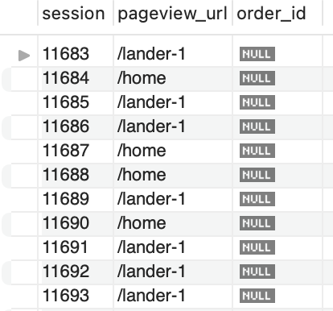The last step is to summarize the total session, total orders, and conversion rate of the two landing pages.
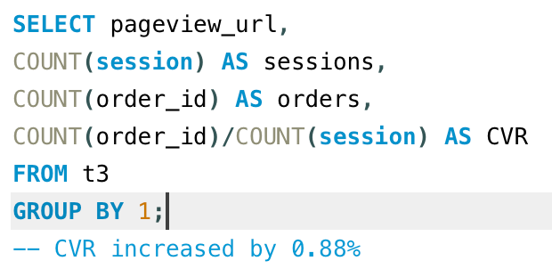 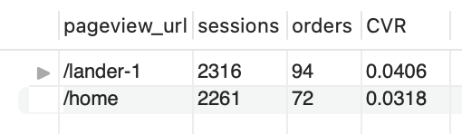Interpretation:
the A/B test results show that compared with /home, the new landing page (/lander-1) had better performance in terms of the total session, total orders, and conversion rate. The CVR was increased by 0.88%. This lift in conversion rate indicated an increase in revenue. We need to replace the old landing page with the new one.
7 For the landing page test you analyzed previously, it would be great to show a full conversion funnel from each of the two pages to orders.
SQL Code & Results:
This is an A/B test of two landing pages (/home and /lander-1).
First, we try to find the first website pageview in the A/B test.
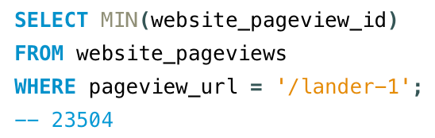 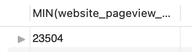It was 23504.
Then we try to find the landing page (first pageview) of every session during the test.
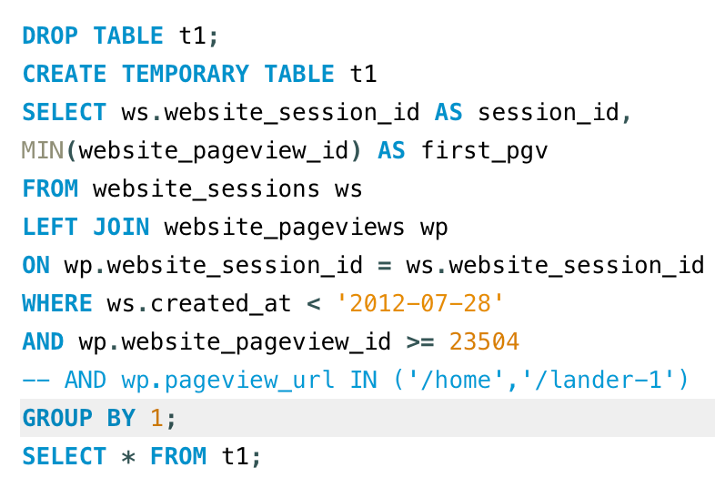 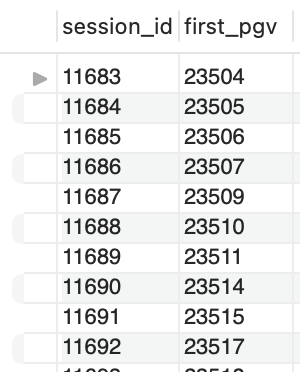Now that we have all the landing pageview IDs, we need to narrow it down to only including /home and /lander-1.
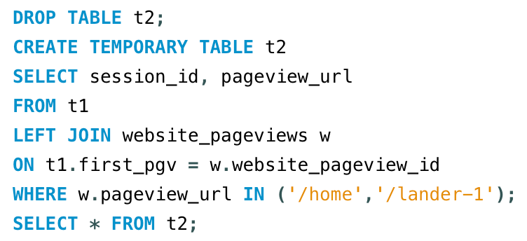 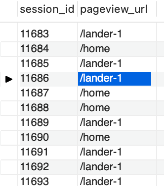When a session starts from the landing page to order, the customer click by this sequence: landing, product, the original Mr. Fuzzy page, cart, shipping, billing, and thank you page. This is called landing to order route.
In the next step, we find out whether a session went to a certain page in the landing to order route. If a session contains a certain page, we add a 1 mark to that page, if not, we add 0.
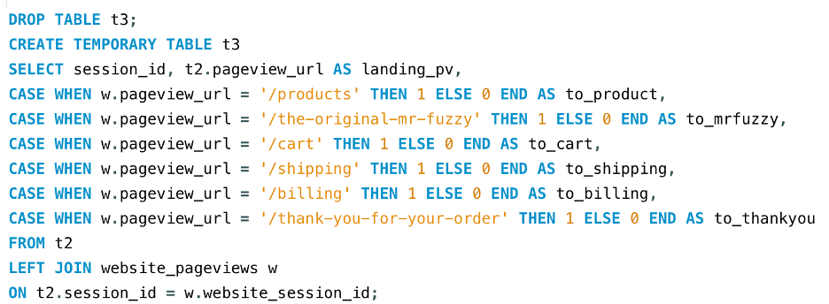 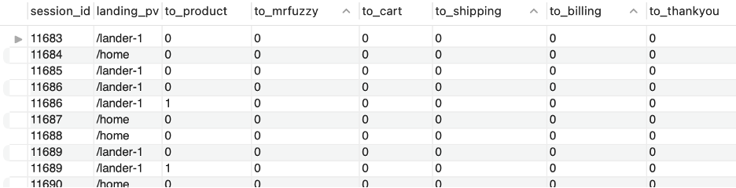Next, we summarized the page statistics of each session.
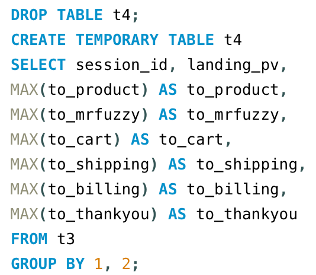 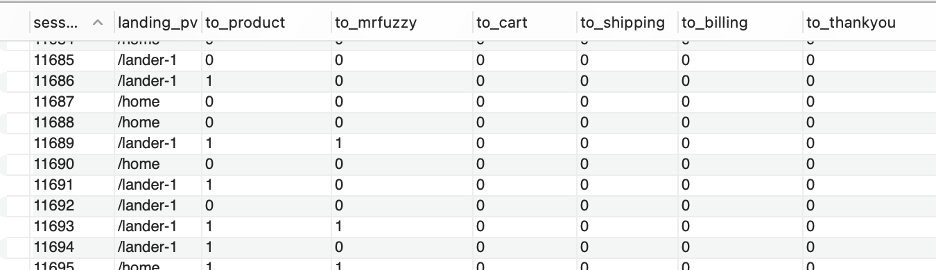In the last step, we count the sessions click through each pages.
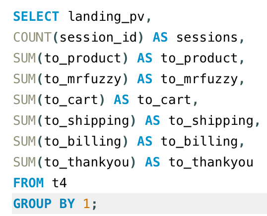 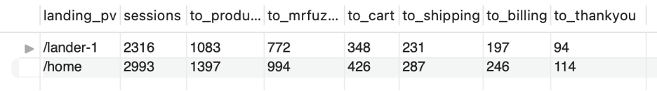Interpretation:
The number of sessions decreases like a funnel along the landing to order route. We can calculate the click-through rate between every two pages in the funnel, figure out the bottleneck step, and improve.
8 I’d love for you to quantify the impact of our billing test, as well. Please analyze the lift generated from the test (Sep 10 –Nov 10), in terms of revenue per billing page session.
SQL Code & Results:
This is an A/B test of two billing pages (/billing and /billing-2).
First, we try to find the first website pageview in the A/B test.
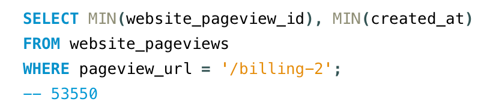 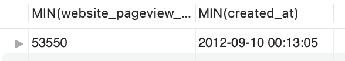The first pageview id is 53550.
We will find all the web sessions clicked through the two billing pages.
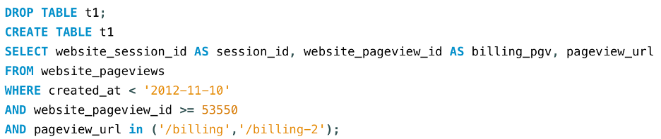 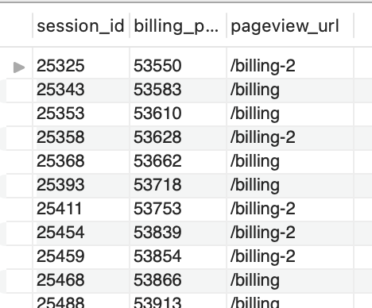Next we will find out the pages clicked from billing pages to orders.
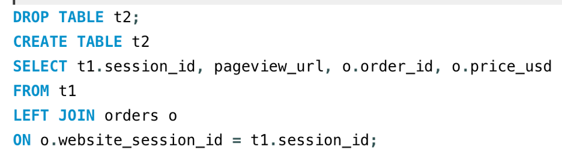 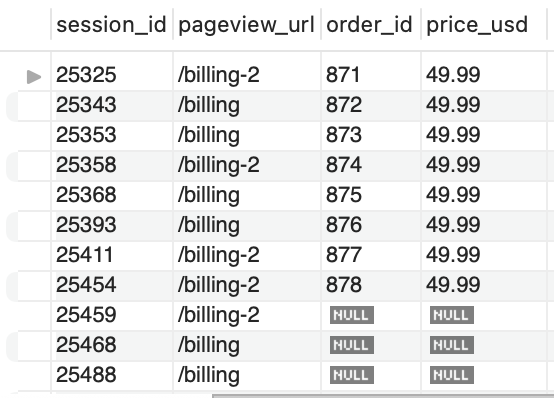Finally, we calculate the session to order rate and revenue per session.
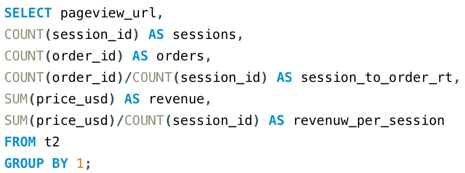 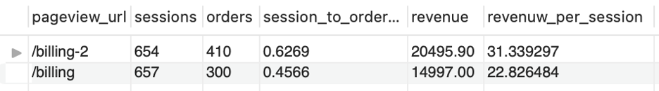Interpretation:
The /billing-2 page had a better session-to-order rate and higher revenue per session than the original billing page. We need to replace the original one with the new one. The new billing page is now worth $8.5 more than the old one. Each billing session we have will bring us $8.5 more revenue.